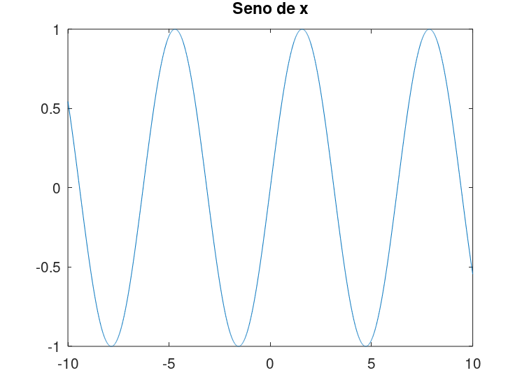
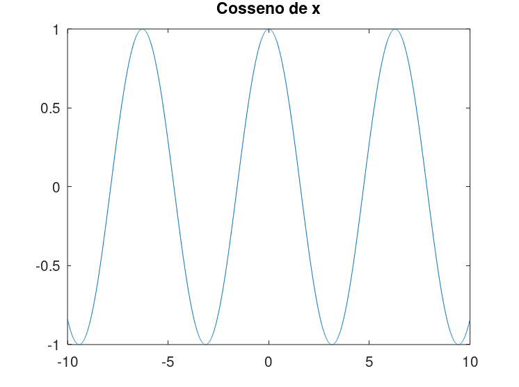
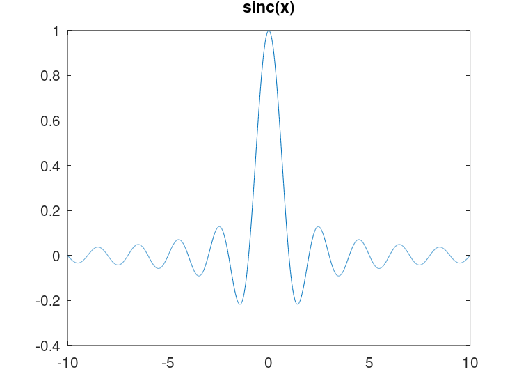
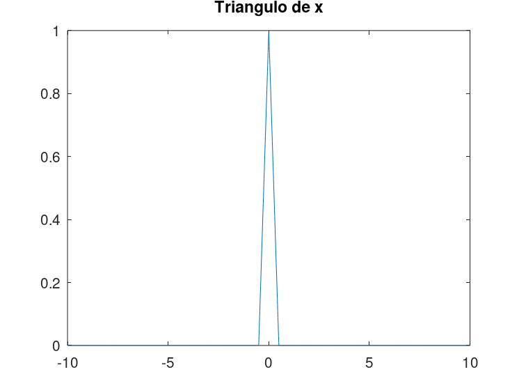
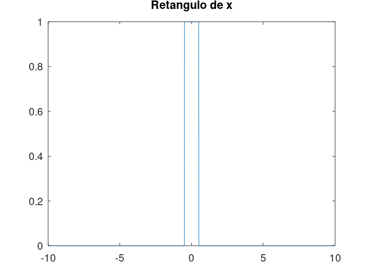
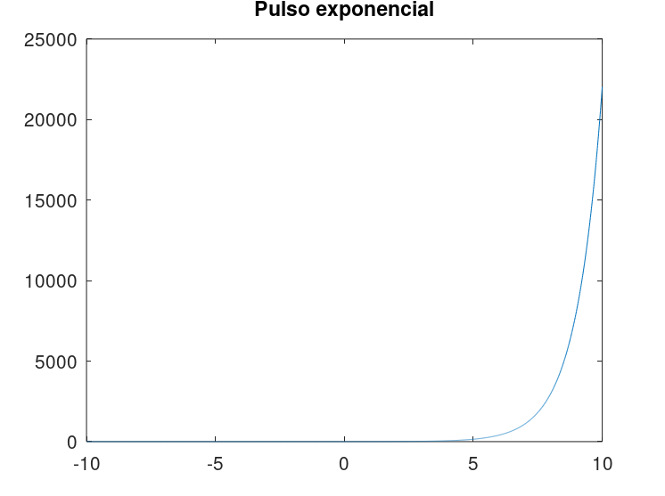
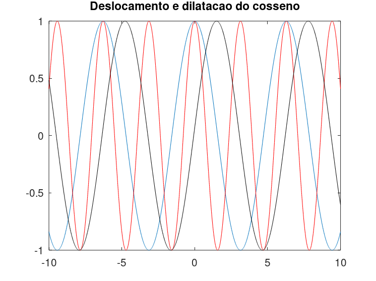
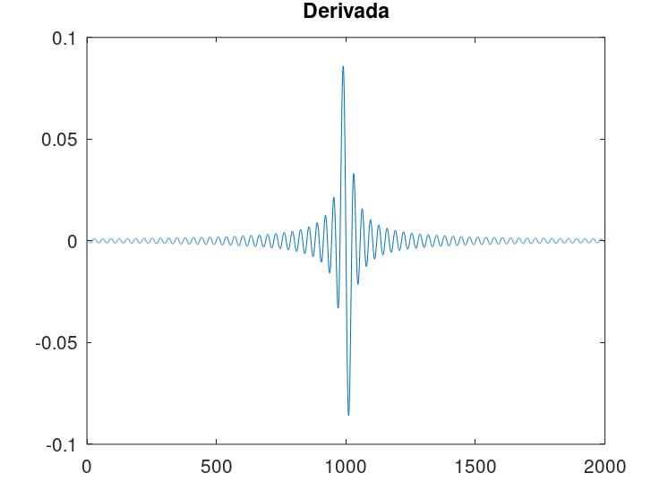
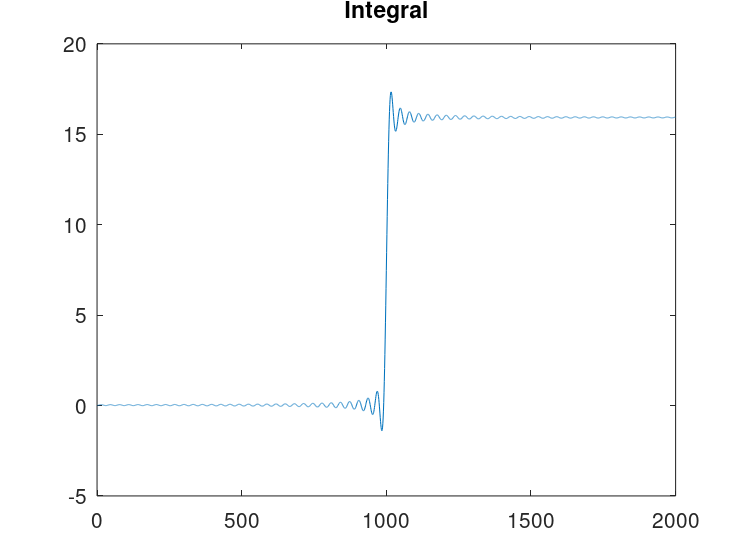

Estudante: André Alfonso Peixoto
GONZALEZ, R; WOODS, R; EDDINS, S. Digital Image Processing Using MATLAB 2. 2. ed. Gatesmark Publishing, 2009. Mathworks Stack Exchange Wikipedia
%{
(1) Implementar funções (com parâmetros)
Sintetizar sinais: sin(x); cos(x); sinc(x); degrau unitário, triângulo, retângulo, pulso exponencial.
Visualizar tais sinais em 2000 pontos ( eixo x onde x sera o tempo, centradas no zero e normalizadas*)
(2) Escolha um sinal sintetizado acima. Aplicar uma Dilatação e um Deslocamento
Visualizar o sinal original, sinal dilatado e o deslocado. Os três sinais -- original, dilatação e deslocado-- na mesma figura.
(3). Escolha um sinal sintetizado acima (1). Processar os sinais sintetizados e aplicar: Integral e a Derivada
Visualizar em uma figura o sinal original, a derivada e o comportamento da integral *
* a integração pode ser desde o ponto inicial até um ponto t , visualizar em t
%}
pkg load signal; pkg load symbolic;
close all; clear x = linspace(-10, 10, 2000); % Varia x em 2000 pontos y = sin(x); % Atribui o seno(x) a y figure plot(x, y) %Cria gráfico de sen(x) title("Seno de x")
x = linspace(-10, 10, 2000); % Varia x em 2000 pontos y = cos(x); % Atribui o cosseno(x) a y figure plot(x, y) % Cria gráfico de cos(x) title("Cosseno de x")
close all; clear x = linspace(-10, 10, 2000); % Varia x em 2000 pontos y = sinc(x); % Atribui o sinc(x) a y figure plot(x, y) % Cria gráfico de sinc(x) title("sinc(x)")
x = linspace(-10, 10, 2000); % Varia x em 2000 pontos y = heaviside(x); % Função de Heaviside figure plot(x, y) % Cria gráfico da função de Heaviside title("Degrau unitario de x")

x = linspace(-10, 10, 2000); % Varia x em 2000 pontos y = tripuls(x); % Atribui pulso triangular à variável triangular figure plot(x, y) % Cria gráfico triangular title("Triangulo de x")
x = linspace(-10, 10, 2000); % Varia x em 2000 pontos y = rectpuls(x); % Atribui pulso retangular à variável retangular figure plot(x, y) % Cria gráfico retangular title("Retangulo de x")
x = linspace(-10, 10, 2000); % Varia x de 2000 pontos (centrado em x e normalizado) y = exp(x); % Atribui o exponencial de x a y figure plot(x, y) % Cria gráfico de exp(x) title("Pulso exponencial")
x = linspace(-10, 10, 2000); % Varia x em 2000 pontos d = 2; % Valor da dilatação x0 = 1.5; % Valor do deslocamento y = cos(x); ydil = cos(x * d); % Dilatação do cosseno de x ydes = cos(x - x0); % Deslocamento do cosseno de x plot(x, y) % Criar gráfico do cosseno hold on plot(x, ydil, '-r') %Gráfico da dilatação do cosseno plot(x, ydes, '-k') %Gráfico do deslocamento do cosseno title("Deslocamento e dilatacao do cosseno")
x = linspace(-10, 10, 2000); % Varia x em 2000 pontos y = sinc(2*pi*x); % Cálculo de sinc(x) derivada = diff(y); % Atribuição da derivada figure plot(derivada) % Cria gráfico da derivada title("Derivada")
x = linspace(-10, 10, 2000); % Varia x em 2000 pontos y = sinc(2*pi*x); % Cálculo de sinc(x) integral = trapz(y(500:500)); integralCumulativa = cumtrapz(y); figure plot(integralCumulativa) title("Integral")